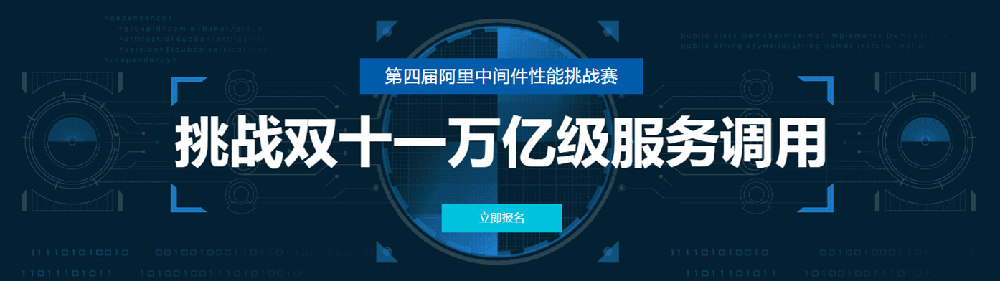
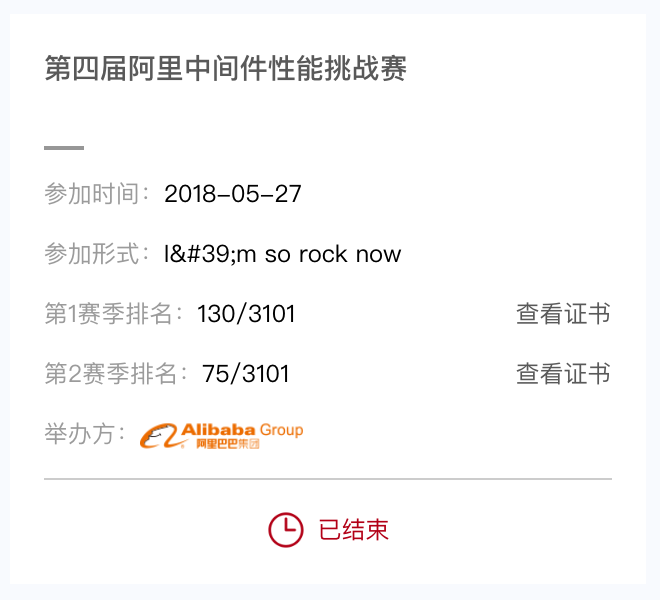
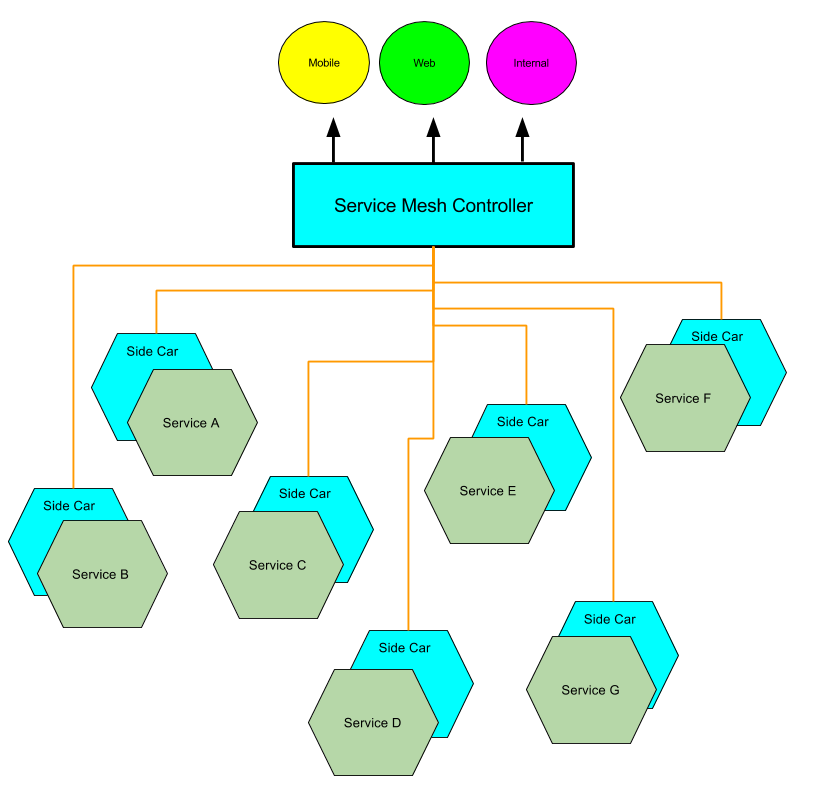
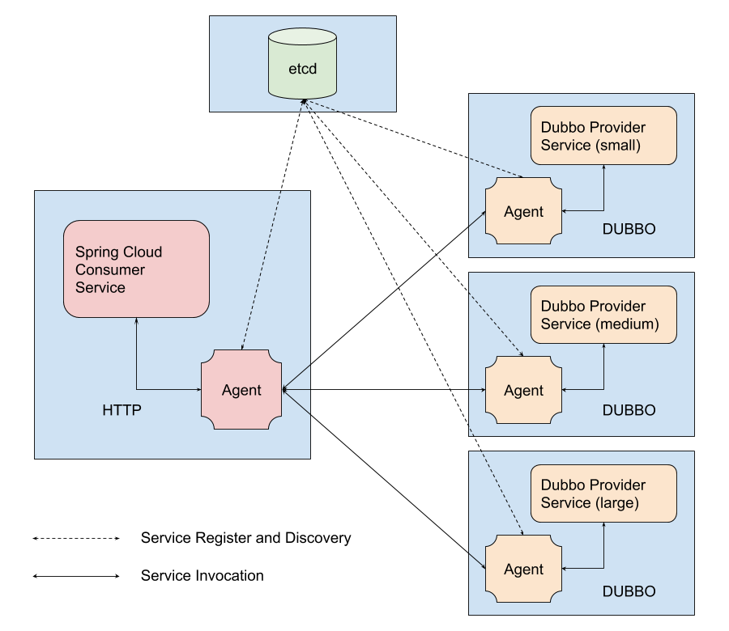

第四届阿里中间件性能挑战赛总结
Intro

上个学期抽空打了一下阿里中间件的比赛。作为少见的程序设计竞赛，还是有些收获的。最后的成绩如下：

总体说起来马马虎虎吧，感觉和排行榜顶尖选手的差距还是很大的。后文也会说到他们的技术思路。
初赛
题意分析
赛题详情见这里
题目描述非常长，而且复杂。这是第一个难关，要有耐心好好审题，理解要做什么。这里再简单描述下：
目标是实现一个Service Mesh，也就是在不改变服务本身的情况下，通过添加以 proxy 或 sidecar 形式部署的 Agent，实现服务的治理（服务注册、负载均衡等）。通过这种方式，所有进出服务的流量都会被Agent拦截，因此可以做到协议的转换，够使得基于不同技术框架和通讯协议建设的服务也可以实现互联互通。

系统架构如下：

图中所有的服务都运行在Docker容器中。流程是 Consumer 通过 Consumer-Agent 在 etcd 注册服务，通过Dubbo协议进行RPC。Provider 会通过 Provider-Agent 在 etcd 中查找已经注册的 Consumer 服务并向其 Agent 发送RPC的请求。此外，Provider 还向外界暴露RPC调用接口提供调用。Consumer 的调用要做到负载均衡。以上，需要达到最高的qps。
初赛最nice的地方是提供了一个Demo，让我们这些没见过上面很多技术的人可以大致先了解一下。事实上，我的大部分工作最开始都是基于这份demo。
其中官方提供的 Provider 和 Consumer 是不可以被修改的。它们都是基于Spring-boot的，逻辑较为简单。其中 Provider 提供了Dubbo的RPC服务，暴露了一个IHelloService接口：1
2
3public interface IHelloService {
int hash(String str) throws Exception;
}
实现的hash方法如下1
2
3
4
5
6
7
public int hash(String str) throws Exception {
int hashCode = str.hashCode();
logger.info(++count + "_" + hashCode);
sleep(50);
return hashCode;
}
每次调用线程睡眠50ms，模拟运行消耗。该服务需要使用Dubbo协议调用，除此以外不需要其他的Dubbo知识。
Consumer 就像一个常见的Spring-boot服务，提供了一个控制器。随机生成了1024长度字符串。使用AsyncHttpClient异步的向 Provider-Agent 进行RPC的请求，得到返回值并和该字符串的hash值做比较。如果相同则返回值为OK的ResponseEntity，不同则返回值为ERROR的ResponseEntity。示例中还用到了SpringMVC中的异步返回，也就是返回DeferredResult实例。当值被赋给该实例时才会返回。此外AsyncHttpClient库提供了发送异步请求而不阻塞线程的方式，可以学习一下它的API，很实用。具体的函数如下：1
2
3
4
5
6
7
8
9
10
11
12
13
14
15
16
17
18
19
20
21
22
23
24
25
26
27
28
29
30
31
32
33
34
35
36
37(value = "/invoke")
public DeferredResult<ResponseEntity> invoke() {
String str = RandomStringUtils.random(r.nextInt(1024), true, true);
String url = "http://127.0.0.1:20000";
DeferredResult<ResponseEntity> result = new DeferredResult<>();
org.asynchttpclient.Request request = org.asynchttpclient.Dsl.post(url)
.addFormParam("interface", "com.alibaba.dubbo.performance.demo.provider.IHelloService")
.addFormParam("method", "hash")
.addFormParam("parameterTypesString", "Ljava/lang/String;")
.addFormParam("parameter", str)
.build();
ListenableFuture<org.asynchttpclient.Response> responseFuture = asyncHttpClient.executeRequest(request);
Runnable callback = () -> {
try {
// 检查返回值是否正确,如果不正确返回500。有以下原因可能导致返回值不对:
// 1. agent解析dubbo返回数据不对
// 2. agent没有把request和dubbo的response对应起来
String value = responseFuture.get().getResponseBody();
if (String.valueOf(str.hashCode()).equals(value)){
result.setResult(ok);
} else {
result.setResult(error);
}
} catch (Exception e) {
e.printStackTrace();
}
};
responseFuture.addListener(callback, null);
return result;
}
至此，题意也基本清晰了。我们需要实现的是两个Agent– Consumer-Agent 和 Provider-Agent。其中 Provider-Agent 负责接收 Provider 的请求，并通过 etcd 查找 Consumer 服务，从而向 Consumer-Agent 发送请求并接收返回，再将结果返回给Provider。 而 Consumer-Agent 负责向 etcd 注册，并接收来自 Provider-Agent 的请求，并向 Consumer 请求结果并返回，再返回给 Provider-Agent。
题目页面上有这么一个展示流程的表格：
| 通讯环节 | 序列化协议 | 远程通讯协议 | 备注 |
|---|---|---|---|
| Client => Consumer | （无参数传递） | HTTP | |
| Consumer => Consumer Aagent | FORM | HTTP | |
| Consumer Agent => Provider Agent | FORM | HTTP | 可根据需要自定义 |
| Provider Agent => Provider | JSON | DUBBO | |
| Provider => Provider Agent | JSON | DUBBO | |
| Provider Agent => Consumer Agent | TEXT | HTTP | 可以根据需要自定义 |
| Consumer Agent => Consumer | TEXT | HTTP | |
| Consumer => Client | TEXT | HTTP |
环境搭建
比赛所用到的环境都是基于Docker的，因为整体环境较为复杂而且需要做到能够在本地评测分数，当时搭建环境也花了一个晚上，所以这里也稍微介绍一下。